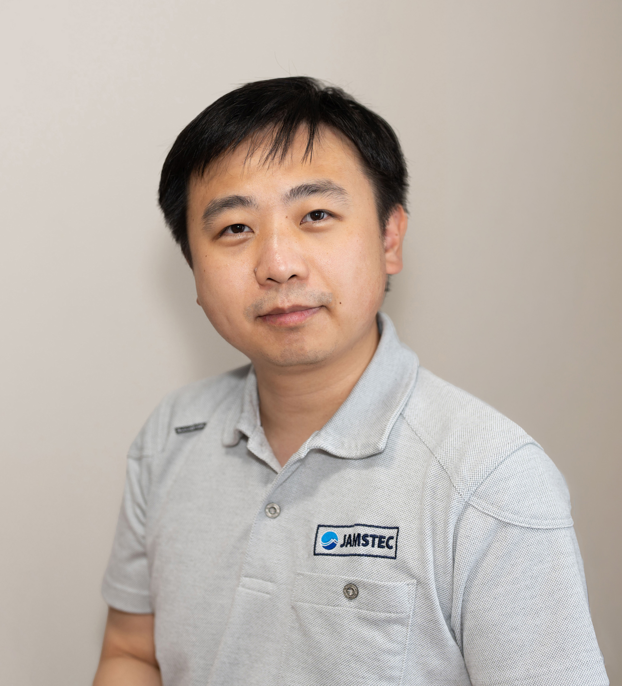

Researcher (tenured) | 副主任研究員
Marine and Coastal Meteorology Research Group, Global Ocean Observation Research Center, Research Institute for Global Change Japan Agency for Marine-Earth Science and Technology (JAMSTEC)
